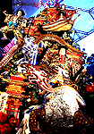

|
 山笠ガマはどこにカエル？！ 【博多発=スミちゃん様】キャナルシティー博多の飾り山の行方が気になります。というのも、山笠の飾りもモノは縁起モノとして、山笠終了後に、それぞれの家に引き取られて飾られることになっているからです。大蛇を引き取ったり、ナメクジを引き取る人がいるのだろうか。。そして最も気になるのは、ガマカエルを誰が引き取るかです。カエラーかなー？？
【博多発=スミちゃん様】キャナルシティー博多の飾り山の行方が気になります。というのも、山笠の飾りもモノは縁起モノとして、山笠終了後に、それぞれの家に引き取られて飾られることになっているからです。大蛇を引き取ったり、ナメクジを引き取る人がいるのだろうか。。そして最も気になるのは、ガマカエルを誰が引き取るかです。カエラーかなー？？【全国かえる奉賛会】キャナルシティー博多の山笠『児雷也豪傑譚話』は大王も見てきた。壮観である。素晴らしすぎる。義賊の児雷也が乗る巨大ガマを自宅に持ち帰る幸福者がいるかとおもうとうらやましいぞ。でも、あのでかさだと、部屋中がガマだらけになっちまうなー
吉祥寺にカエルグッズ専門店、全国３店目【京都発=冬樹蛉様】 じつは、知人からタレコミがありまして、なんでも吉祥寺にカエルグッズ専門店ができたというのです。お店の情報は以下のとおりです。店名は『ｃａｖｅ』=〒180-0004武蔵野市吉祥寺本町2-26-1 Tel0422-20-4321。営業時間は、11:00〜21:00で木曜不定休だそうです。 私は京都在住なので、おそらく滅多なことでは行く機会がないでしょう。もし、かえる新聞愛読者の方が吉祥寺近辺にいらしたら、ぜひ取材してほしいと思います。
東京カエラーのレポートを待つ！【全国かえる奉賛会】全国３例目のカエル専門店のようである。冬樹蛉様は、創刊まもないカエル新聞の1997年1月27日号で、大阪のカエールボックスをいち早く報告。感状を授与した恩義があるぞーっ。カエラーの同志諸君！いまこそ、トンボの親分にお礼をかねて、店のレポートを待つ！新潟の祭りにカエルグッズ満載屋台が登場！【新潟発=RANA同志記者】私は新潟市に住んでいるのですが、先週末近所の神社でお祭りがありまして、カエラーのおこづかいを奪う屋台あこぎな屋台(^^;を発見しました。ブラブラと歩いていると、カエルグッズ満載のくじ引き屋台を発見。色々な大きさのぬいぐるみやグッズで屋台はうめつくされていました。一回300円でくじを引いて、出た番号の賞品をもらえる、というシステムです。お財布の中身がさみしかったのですが、「空クジなしだし。このカエルグッズの山をみて、素通りはできないよなあ...」と一回くじを引いたのです。 でた番号の賞品は....「え！これはカエルグッズではない！」そうです。最前列におかれている（目立たない位置）末等と、思われるガラクタ賞品２〜３点のみ、カエルグッズではなかったんです。 100円均一で売っていそうな花柄のミニタオルを手に、どうしてもあきらめることができず、再び挑戦しました。次は...30円くらいで売っていそうな、パンダ柄の小さなビニール巾着が当たりました。 沢山のカエルグッズでカエラー心をくずぐり、末等のみカエルじゃないなんて....くじ運が悪い私がいけないのでしょうけど、なんかすっきりできません。 これから、各地で夏祭りの季節ですが、カエル屋台には要注意です。末等までカエルかどうか良く確かめてから、トライしてください。
ハズレもカエルにしてくれええ！【全国かえる奉賛会】カエルくじ引き屋台の着想は、素晴らしいぞ。しかし、あと一歩努力して、ハズレ景品もカエルにしてほしい。大王も屋台を引いて全国を巡業しようかなー。画像の到着を待つ。
投稿採用者に武功カエル徽章を授与！ |
かえる古新聞過去に取り上げた記事を見出し付きで一覧したい人は、ここをクリック◆創刊号を見る◆先週号を見る◆話題の号を見る◆かえる新聞の昔を読む
|
私も入っています。。全国かえる奉賛会
大王様に会うには、このバナーをクリック。ずっと奥に写真館があるぞ。全国かえる奉賛会に入会するには、自分のホームページのどこかに、下の部分を追加するとバナーがリンク付きで表示されるぞ。どんどん入会しましょー |


|